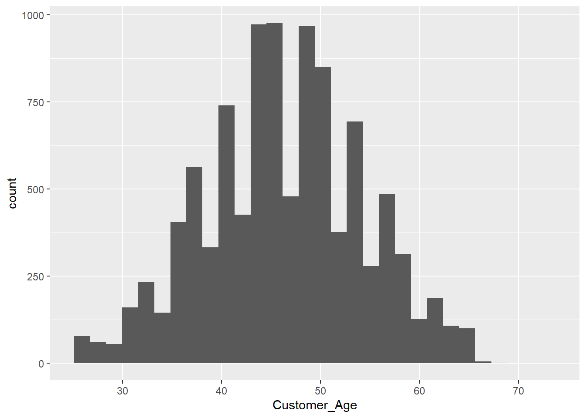
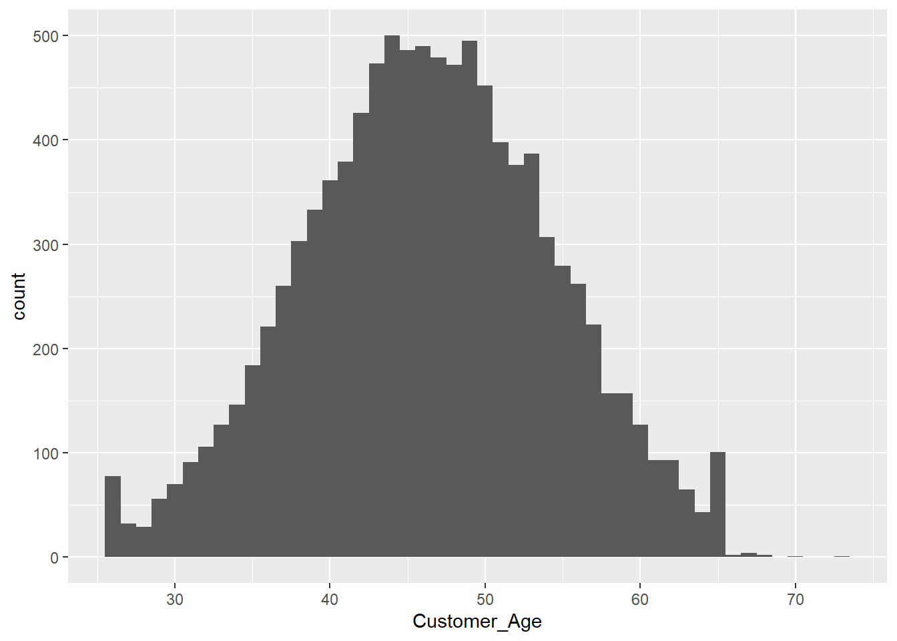
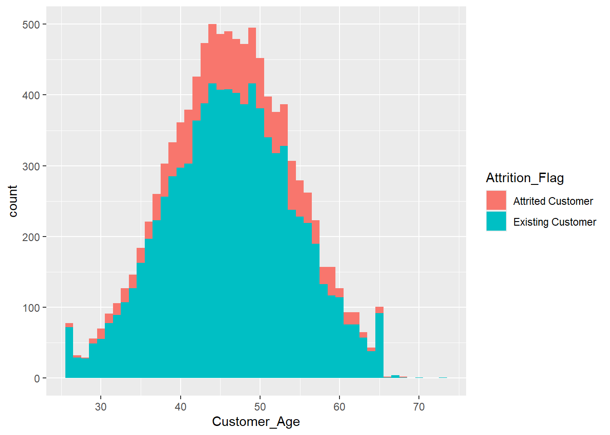
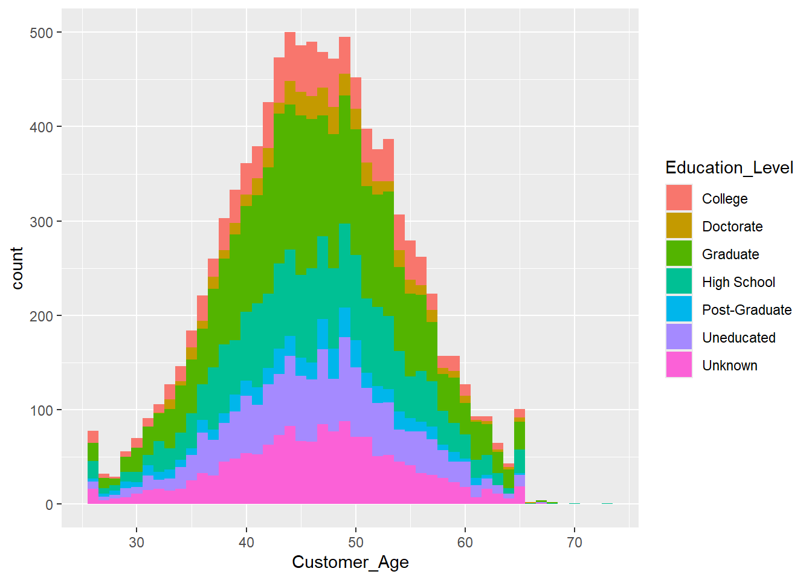
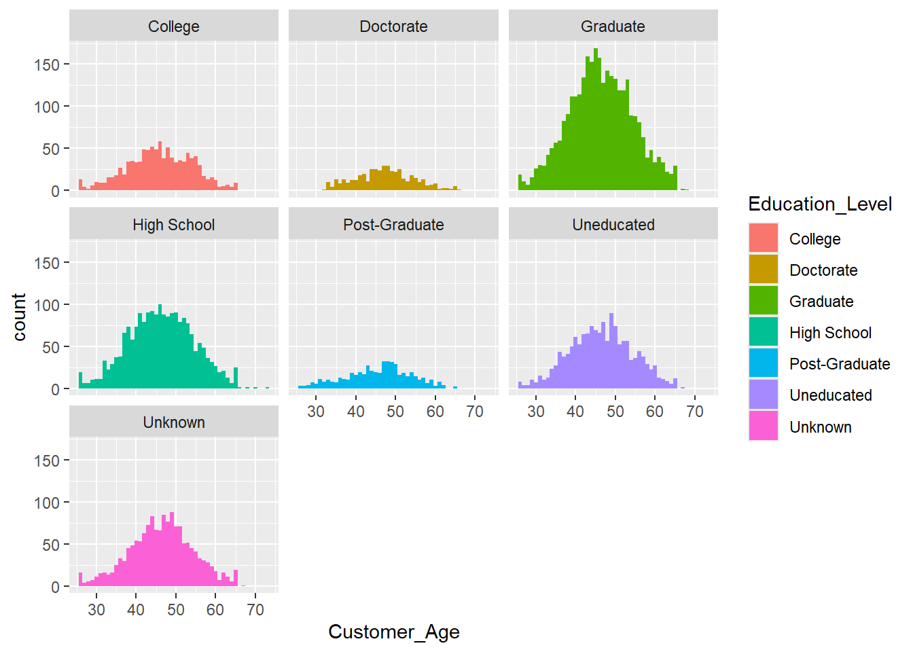
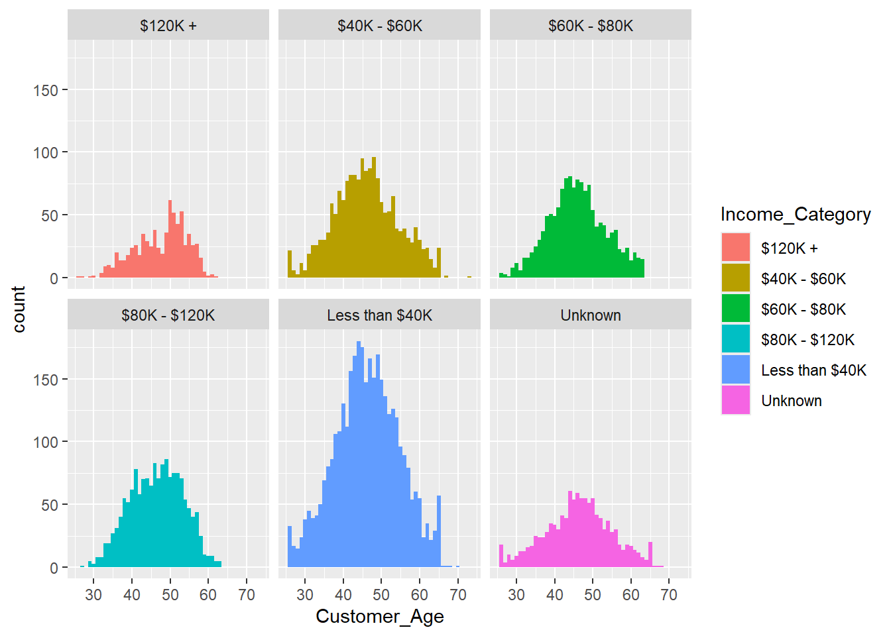
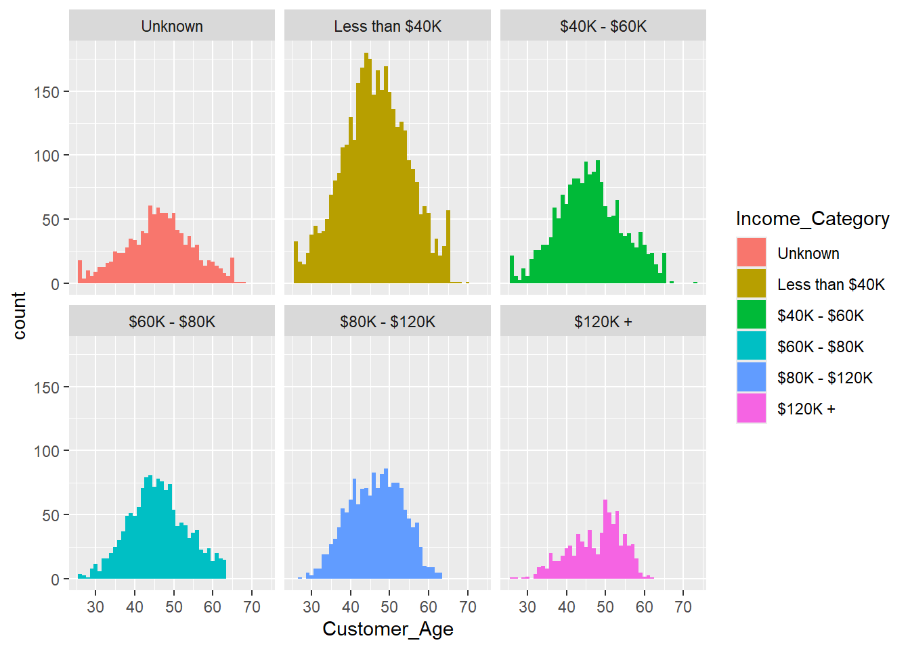

library("tidyverse")
library("tidymodels")1 A brief summary of R
The goal of this initial problem set is to recap some key concepts in the R programming language. We will specifically focus on data manipulation and visualization. Additionally, we will explore different metrics for calculating losses.
The packages we use during the lectures, encompass training machine learning models and assessing their performance. They are generally user-friendly, however, it is crucial not to underestimate the role of effectively visualizing your findings. Visualizing results and data manipulation are closely related, so it is important to spend some time reviewing these fundamental concepts. We do expect you to have some experience with R, but courses like Statistics I/II are a sufficient prerequisite.
As for the exam, we will not expect you to write multiple lines of R code on paper, rather than potentially filling in some gaps or interpreting code chunks. It is important, however, that you understand the different models, methodologies, and code introduced throughout the semester since we will ask you to answer questions regarding those concepts.
As a rule of thumb, I recommend using the help function for most packages, as they are generally well-written and provide useful examples for understanding a function. Another simple solution for tackling problems in your code is to simply Google your problem and resort to platforms like Stackoverflow (usually Stackoverflow is within the first five search results anyway).
2 Exercises
The following libraries include most packages we will need throughout this exercise sheet.
Throughout this exercise, we will be working with the Credit Card customers dataset. The dataset consists of 10,127 entries that represent individual customers of a bank including but not limited to their age, salary, credit card limit, and credit card category.
credit_info <- read.csv("data/BankChurners.csv")2.1 Exercise 1: Visual Data Exploration
In this first exercise, we want to familiarize ourselves with the data set. ggplot2 will be our primary library for visualizations as it offers a vast framework of plot types and customizations. If you are not yet familiar with ggplot2, you can check out the R Graphics Cookbook, which is an open-source practical guide for generating high-quality graphs with R, and in particular with ggplot2.
2.1.1 Exercise 1a:
We first want to explore some of the demographics in our data set. The following code generates a histogram for the age of the customers.
ggplot(data = credit_info, aes(x = Customer_Age))+geom_histogram()`stat_bin()` using `bins = 30`. Pick better value with `binwidth`.
Using the binwidth option, create a histogram for the age of the customers such that each age has its own bin. The output of your code should look as follows:
ggplot(data = credit_info, aes(Customer_Age))+geom_histogram(binwidth = 1)
2.1.2 Exercise 1b:
Now that the histogram looks a bit less messy, we want to add more information. For example, by setting the fill option to Gender, we can get an initial feeling for the distribution between male and female customers within each age group in the data set.
ggplot(data = credit_info, aes(Customer_Age, fill = Gender))+geom_histogram(binwidth = 1)
Instead of visualizing the Gender as in the plot above, create a histogram with the Attrition_Flag as the fill option. Note, that in this context an attrited customer is someone who is either planning to cancel the credit card or has already handed in the cancellation form. The resulting plot should look like this:
ggplot(data = credit_info, aes(Customer_Age, fill = Attrition_Flag))+
geom_histogram(binwidth = 1)
2.1.3 Exercise 1c:
The histograms above only provide limited insight to the demographics and customer status as it is relatively difficult to figure out the proportions of each group. To takes this one step further, consider the following histogram, which shows the Education_Level within every bin.
ggplot(data = credit_info, aes(Customer_Age, fill = Education_Level))+
geom_histogram(binwidth = 1)
Instead of using a stacked histogram, we can resort to the facet_wrap function, which generates a subplot for each group.
ggplot(data = credit_info, aes(Customer_Age, fill = Education_Level))+
geom_histogram(binwidth = 1) +
facet_wrap("Education_Level")
2.1.3.1 Exercise 1c i:
Create a histogram as above, but instead of grouping the Education_Level, group for the different credit card categories. The result should look like the following plot:
ggplot(data = credit_info, aes(Customer_Age, fill = Income_Category))+
geom_histogram(binwidth = 1) +
facet_wrap("Income_Category")
2.1.3.2 Exercise 1c ii:
The legend in our generated plot is in no particular order. Familiarize yourself with the factor function, which helps solve that problem. By overwriting the Income_Category with the output of the factor function, we can order the income categories. Assign levels to the Income_Category using the factor function and generate a new plot with ordered labels. The new plot should look similar to the following:
credit_info$Income_Category<-factor(credit_info$Income_Category,
levels = c("Unknown","Less than $40K",
"$40K - $60K","$60K - $80K","$80K - $120K","$120K +"),
labels = c("Unknown","Less than $40K",
"$40K - $60K","$60K - $80K","$80K - $120K","$120K +"))
ggplot(data = credit_info, aes(Customer_Age, fill = Income_Category))+
geom_histogram(binwidth = 1) +
facet_wrap("Income_Category")
2.2 Exercise 2: Statistical Data Exploration and Manipulation
2.2.1 Exercise 2a:
One important aspect of Data Exploration is already visible in Exercise 1. The Income_Category of many customers is not known. That is not only the case for this variable but many others! However, instead of using the standard values NA or NaN, missing values are encoded by Unknown. The following code converts all the “Unknown” values to NA. By changing the values to NA we can filter them more conveniently in the later exercises.
credit_info_clean <-credit_info %>%
mutate(across(where(is.character), ~na_if(.,"Unknown")),
Income_Category = factor(Income_Category,
levels = c(NA,"Less than $40K",
"$40K - $60K","$60K - $80K",
"$80K - $120K","$120K +")))2.2.1.1 Exercise 2a i:
Given the cleaned data set credit_info_clean, find out which columns contain missing values. You can check your answer with the output below:
credit_info_clean %>% select_if(function(col) sum(is.na(col))>0) %>% names[1] "Education_Level" "Marital_Status" "Income_Category"2.2.1.2 Exercise 2a ii:
For the same data set, find out how many of the values are missing. You can check your answer with the output below:
missing <- credit_info_clean %>% select_if(function(col) sum(is.na(col))>0) %>% names
colSums(is.na(credit_info_clean[missing]))Education_Level Marital_Status Income_Category
1519 749 1112 2.2.2 Exercise 2b:
Instead of visualizing our data, it is sometimes more convenient to directly examine numerical representations. Consider the following code chunk which groups the different income categories and applies the mean and median function to the data set.
by_inc <- credit_info_clean %>% group_by(Income_Category) %>%
summarise(
meanlim = mean(Credit_Limit),
medlim = median(Credit_Limit)
)
by_inc# A tibble: 6 × 3
Income_Category meanlim medlim
<fct> <dbl> <dbl>
1 Less than $40K 3754. 2766
2 $40K - $60K 5462. 3682
3 $60K - $80K 10759. 7660
4 $80K - $120K 15810. 12830
5 $120K + 19717. 18442
6 <NA> 9517. 63802.2.2.1 Exercise 2b i:
Modify the code snippet above to include the \(25\%\) and \(75 \%\) quantile. A solution could look like this:
by_inc <- credit_info_clean %>% group_by(Income_Category) %>%
summarise(
"mean" = mean(Credit_Limit),
"median" = median(Credit_Limit),
"1stQlim" = quantile(Credit_Limit,probs = 0.25),
"3rdQlim" = quantile(Credit_Limit,probs = 0.75)
)
by_inc# A tibble: 6 × 5
Income_Category mean median `1stQlim` `3rdQlim`
<fct> <dbl> <dbl> <dbl> <dbl>
1 Less than $40K 3754. 2766 2021 4271
2 $40K - $60K 5462. 3682 2436. 6725
3 $60K - $80K 10759. 7660 3661. 15220.
4 $80K - $120K 15810. 12830 5511 25182.
5 $120K + 19717. 18442 8466. 34516
6 <NA> 9517. 6380 3137 12420.2.2.2.2 Exercise 2b ii:
Modify your code to omit the NA values.
by_inc <- credit_info_clean %>% group_by(Income_Category) %>%
summarise(
"mean" = mean(Credit_Limit),
"median" = median(Credit_Limit),
"1stQlim" = quantile(Credit_Limit,probs = 0.25),
"3rdQplim" = quantile(Credit_Limit,probs = 0.75)
) %>% na.omit
by_inc2.2.3 Exercise 2c:
Sometimes we only want to infer results for certain subgroups. The Blue Credit Card is by far the most common type of credit card. Gaining insights for this particular group allows us to retrieve information that might be useful in later analyses.
Hint: For the following exercises (especially ii and iii) the dplyr function filter will be useful.
2.2.3.1 Exercise 2c i:
Find out how many customers have a Blue credit card.
count(credit_info_clean, Card_Category)["n"] %>% max2.2.3.2 Exercise 2c ii:
Create a new tibble or data frame called credit_info_blue containing all customers that hold a Blue credit card.
credit_info_blue <- credit_info_clean %>% filter(Card_Category == "Blue")2.2.3.3 Exercise 2c iii:
Find the number of Female Customers holding the Blue Card, that are at most 40 years old and have a credit limit above 10,000 USD.
tib <- credit_info_blue %>% filter(Gender == "F" & Customer_Age <= 40 & Credit_Limit > 10000) %>% count()2.3 Exercise 3: Losses
2.3.1 Exercise 3a:
In the lecture, we talked about different loss functions, as well as their advantages and disadvantages. The goal of this exercise is to review some of the loss functions introduced.
2.3.1.1 Exercise 3a i:
Write three different functions loss_mse, loss_mae, and loss_rmse that calculate the respective loss value. Each function should take two vectors y and yhat as an input and return the respective loss value.
loss_mse <- function(y, yhat){
mean((y - yhat)^2)
}
loss_mae <- function(y, yhat){
mean(abs(y - yhat))
}
loss_rmse <- function(y, yhat){
sqrt(mean((y - yhat)^2))
}Test the loss functions with the following inputs. You can check your answers below.
targets <- c(120, 97, 4, 25, 15)
predictions <- c(111, 92, 9, 29, 20)
loss_mse(targets, predictions)[1] 34.4loss_mae(targets, predictions)[1] 5.6loss_rmse(targets, predictions)[1] 5.8651512.3.1.2 Exercise 3a ii:
Write a function loss_huber that returns the Huber loss for two given vectors y, yhat, and a threshold \(\delta\). The Huber loss of two vectors can be calculated as follows:
\[ \mathrm{loss_{huber}} =\frac{1}{\text{length(y)}} \sum_{i=1}^{\mathrm{length(y)}} \mathcal{L}(y_i,\hat y_i) \]
where
\[ \mathcal{L}(y_i,\hat y_i) = \begin{cases} \frac{1}{2}(y_i-\hat y_i)^2, \quad&\text{if } |y_i-\hat y_i| <\delta\\ \delta (|y_i-\hat y_i|-\frac{1}{2}\delta),\quad &\text{else}. \end{cases} \]
loss_huber <-function(y, yhat, d){
res <- 0
for (i in seq_along(y)) {
if(abs(y[i] - yhat[i]) < d){
res = res + 0.5 * (y[i] - yhat[i])^2
} else{
res = res + d * (abs(y[i] - yhat[i]) - 0.5 * d)
}
}
return(res/length(y))
}
loss_huber_alternative <- function(y, yhat, d) {
residual <- (y - yhat)
L <- if_else(
abs(residual) < d,
residual^2 / 2,
d * (abs(residual) - d / 2)
)
mean(L)
}You can test your function with the vectors targets and predictions with d=1.
loss_huber_alternative(targets, predictions, 1)[1] 5.12.3.2 Exercise 3b:
The goal of this exercise is to gain a deeper understanding of the different loss types calculated in the previous exercises. Consider the following scenarios and argue which loss function should be used.
2.3.2.1 Exercise 3b i:
Decide between MSE and RMSE:
- You are developing a predictive model for housing prices. Given various features of a house like size (in \(m^2\)) , number of floors, and the name of the neighborhood. You want to estimate its market value in EUR.
#RMSE should be used to measure the average prediction error. This is the case
#since by using RMSE the error is in the same units as the target variable (e.g.,
#EUR). This helps in quantifying the magnitude of prediction errors accurately.2.3.2.2 Exercise 3b ii:
Decide between MAE and MSE:
- Imagine you are working on a weather prediction model, where you aim to forecast daily temperatures for a location with strong and sudden changes in weather. The data contains
average wind velocity,air pressure,humidity, and many more. You also have historical temperature data for training and the overall goal is to minimize prediction errors.
#MAE should be used to measure the predictive error since it is more robust with
#respect to outliers. Weather data can sometimes contain outliers due to extreme
#weather events, sensor malfunctions, or other factors.2.3.2.3 Exercise 3b iii:
Decide between MAE, MSE, and Huber loss
- You are building a machine-learning model for autonomous vehicle control. The vehicles have to navigate through complex environments with all sorts of different obstacles varying in size and shape. The goal is to ensure the vehicle makes safe decisions based on some numerical value calculated based on the obstacles observed.
# Huber Loss is the ideal choice because it strikes a balance between the
#robustness of MAE and the sensitivity to larger errors of MSE. Especially for
#varying values of delta a well balanced loss function can be achieved.